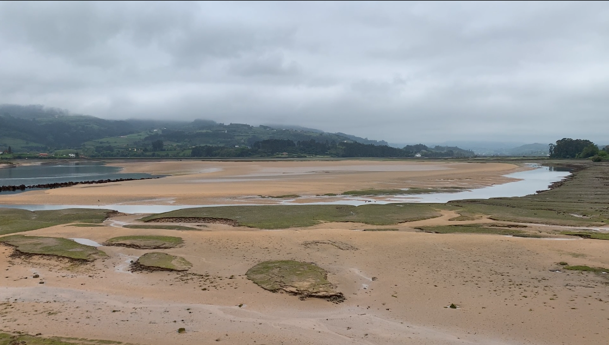

Salt marshes are coastal wetland ecosystems at the border between land and sea. They are common in estuaries and present fascinating and diverse habitats, occurring worldwide, primarily in middle and high latitudes (NOAA, 2024). Salt marshes are important in many ways. They have a high rate of primary production, provide habitats for many species, improve water quality by filtering pollutants, and even contribute to coastal safety by assisting in flood and erosion control and buffering wave action during storm surges (Boorman, 1999; King & Lester, 1995; Mickle, 1993; Silliman, 2014; Simas et al., 2001; Vernberg, 1993). They especially play an important role as blue carbon sinks. Their vegetation effectively captures atmospheric CO2 through photosynthesis and stores carbon in the soil, helping to counteract the effects of the greenhouse gas emissions on the Earth’s climate (Brook et al., 2025; Chmura et al., 2003; Mcleod et al., 2011). But the ecosystem faces multiple threats that reduce its stability. Climate change-driven impacts such as sea level rise, storm events, the associated erosion, and desiccation all contribute to marsh loss (Barras, 2007; Campbell et al., 2022; Silliman, 2014; Watson et al., 2017). Historically, anthropogenic drainage connected to urbanisation was a major contributor to marsh loss (Bromberg & Bertness, 2005; Davidson, 2014; Gedan et al., 2009). Alongside this, nutrient enrichment and pollution leading to eutrophication continue to pose a risk to these habitats (Borja et al., 2008; Bromberg & Bertness, 2005; Gedan et al., 2009). Littering and plastic pollution also have a significant impact. Marshes can act as traps for marine litter, with accumulation varying depending on the area and its distance from urban sources (Girones et al., 2024; Pinheiro et al., 2022). The most commonly found litter items in salt marshes and wetlands are plastic materials and foam, including caps, lids, plastic bags, polystyrene fragments, and fishing gear, with composition varying depending on proximity to urban areas and local currents (Masiá et al., 2021; Pinheiro et al., 2021; Rayon-Viña et al., 2018; Rech et al., 2018; Rivas-Iglesias et al., 2025). Litter can cause physical damage such as crushing vegetation or blocking light, and can also be ingested by wildlife, leading to injury or death (Uhrin & Schellinger, 2011; Viehman et al., 2011). Litter is also linked to the introduction of invasive species, as floating debris can act as a raft or vector, allowing species to hitchhike and settle in new areas (Bergmann, 2015; Gregory, 2009; Rech et al., 2016). Invasive species often show a broader tolerance to environmental stressors and can occupy a wider ecological niche, with that potentially removing native species (Barnes, 2002; Barnes & Milner, 2005; Gregory, 2009; Higgins & Richardson, 2014; Miralles et al., 2018; Rech et al., 2016). Although salt marshes can be restored, and restoration prior to major stress events can help reduce carbon release, ongoing threats are causing salt marsh degradation at a faster rate than recovery (Campbell et al., 2022; Macreadie et al., 2013; Mason et al., 2023) In the scope of this internship, three salt marsh sites in Asturias were visited: Ría de Villaviciosa, Ría del Eo, and Ría de Ribadesella. Ría de Villaviciosa and Ría del Eo are RAMSAR protected areas, while Ría de Ribadesella currently holds Natura 2000 status. When visiting the sites, littering was present in all areas. Although the gradient of pollution and litter type varied, this calls for further outreach and awareness. It shows the importance of education and calls for keeping protection statuses and improving protection where not yet in effect.

Fig 1. Map of field locations (in red) around Oviedo (in blue)
Salt marshes host a diverse plant and animal community, that is highly specialized and perfectly adapted to its surrounding (Pennings & Bertness, 2001; Silliman, 2014; Vernberg, 1993). Otters are among the species that visit salt marshes, using them as part of a wider network of coastal and freshwater habitats. They move fluidly between rivers and estuaries, and salt marshes offer them rich hunting grounds and shelter (Brooks et al., 2011; Eby et al., 2017; Groves & Smith, 2021). The Eurasian otter (Lutra lutra) is the most widespread otter species in the world (Loy et al., 2022; MacDonald & Mason, 1994). It feeds mainly on fish, but it also takes crustaceans, amphibians, and birds when the opportunity arises (Almeida et al., 2012; Parry et al., 2011; Sulkava, 1996). This flexible opportunistic diet is perfectly adapted to the prey available in coastal and freshwater environments (Almeida et al., 2012; Krawczyk et al., 2016; Parry, 2010). Otters sit at the top of the food chain, so they perform a strong top-down control on the species below them (Bez Birolo et al., 2026; Drake et al., 2023). As apex predators, they help keep prey populations in balance, which in turn supports the wider stability of the marsh ecosystem (Almeida et al., 2012; Chanin, 2003; Fu et al., 2024). Sea otter populations, for example, help reduce erosion in salt marshes by preying on invasive burrowing crabs (Jeppesen et al., 2025). Because of this position, otters serve as key indicators of ecosystem health (Bez Birolo et al., 2026; Loy et al., 2022). Where otters thrive, water quality and prey availability tend to be high (Bez Birolo et al., 2026; Kruuk & Carss, 1996; Ruiz-Olmo et al., 1997; Ruiz‐Olmo et al., 2001). Salt marshes and Wetlands may also serve as an important birthing area for otters, offering shelter and food for females raising young (Eby et al., 2017; Liles, 2003). Eurasian otter populations declined sharply across Europe during the twentieth century, driven by pollution, habitat loss, and hunting (Fernández-Morán et al., 2002; MacDonald & Mason, 1994). The species is currently globally listed as Near Threatened by the IUCN, with a decreasing population trend overall (Loy et al., 2022). Otters recover slowly, because of low reproductive rates and since they need large, connected territories (Barbosa et al., 2001; Koelewijn et al., 2010; Yoxon & Yoxon, 2019). Despite this, populations across parts of Europe are now increasing, thanks to improved water quality and stronger legal protection (Chanin, 2003; Loy et al., 2022; Palazón Miñano, 2023). This recovery is visible in Spain and Asturias (Palazón Miñano, 2023; Romero Suances, 2018). Otters show presence and were recently recorded at Ría del Eo (Gobierno del Principado de Asturias, 1999; Palazón Miñano, 2023). This is a significant sign of the estuary's improving health. Their return suggests that conditions in the marsh are becoming more favourable, both for the otters themselves and for the wider ecosystem they depend on (Palazón Miñano, 2023). Continued protection of Ría de Villaviciosa, Ría del Eo, and Ría de Ribadesella will be essential to help sustain this recovery and provide a safe environment for the otters future in the region.
Almeida, D., Copp, G. H., Masson, L., Miranda, R., Murai, M., & Sayer, C. D. (2012). Changes in the diet of a recovering Eurasian otter population between the 1970s and 2010. Aquatic Conservation: Marine and Freshwater Ecosystems, 22(1), 26–35. https://doi.org/10.1002/aqc.1241
Barbosa, A. M., Real, R., Márquez, A. L., & Rendón, M. Á. (2001). Spatial, environmental and human influences on the distribution of otter ( Lutra lutra ) in the Spanish provinces. Diversity and Distributions, 7(3), 137–144. https://doi.org/10.1046/j.1472-4642.2001.00104.x
Barnes, D. K. A. (2002). Invasions by marine life on plastic debris. Nature, 416(6883), 808–809. https://doi.org/10.1038/416808a
Barnes, D. K. A., & Milner, P. (2005). Drifting plastic and its consequences for sessile organism dispersal in the Atlantic Ocean. Marine Biology, 146(4), 815–825. https://doi.org/10.1007/s00227-004-1474-8
Barras, J. A. (2007). Satellite Images and Aerial Photographs of the Effects of Hurricanes Katrina and Rita on Coastal Louisiana (Data Series) [Data Series].
Bez Birolo, A., Tosatti, M., Carvalho Junior, O. D. O., & Haddout, A. (2026). Otters as bioindicators of estuarine health: Scientific gaps, field-based insights, and a framework for future research. Estuarine Management and Technologies, 3, 65–78. https://doi.org/10.3897/emt.3.185117
Borja, A., Bricker, S. B., Dauer, D. M., Demetriades, N. T., Ferreira, J. G., Forbes, A. T., Hutchings, P., Jia, X., Kenchington, R., Marques, J. C., & Zhu, C. (2008). Overview of integrative tools and methods in assessing ecological integrity in estuarine and coastal systems worldwide. Marine Pollution Bulletin, 56(9), 1519–1537. https://doi.org/10.1016/j.marpolbul.2008.07.005
Bromberg, K. D., & Bertness, M. D. (2005). Reconstructing New England Salt Marsh Losses Using Historical Maps. Estuaries, 28(6), 823–832.
Brook, T., Millington-Drake, M., McGarrigle, A., Garbutt, A., & Rodriguez, K. (2025). State of the World’s Saltmarshes 2025. STATE OF THE WORLD.
Brooks, R., Serfass, T., Triska, M., & Rebelo, L.-M. (2011). Ramsar Protected Wetlands of International Importance as Habitats for Otters. IUCN Otter Specialist Group Bulletin, 28(B), 47–63.
Campbell, A. D., Fatoyinbo, L., Goldberg, L., & Lagomasino, D. (2022). Global hotspots of salt marsh change and carbon emissions. Nature, 612(7941), 701–706. https://doi.org/10.1038/s41586-022-05355-z
Chanin, P. R. F. (2003). Ecology of the European otter. English Nature.
Chmura, G. L., Anisfeld, S. C., Cahoon, D. R., & Lynch, J. C. (2003). Global carbon sequestration in tidal, saline wetland soils. Global Biogeochemical Cycles, 17(4), 2002GB001917. https://doi.org/10.1029/2002GB001917
Drake, L. E., Cuff, J. P., Bedmar, S., McDonald, R., Symondson, W. O. C., & Chadwick, E. A. (2023). Otterly delicious: Spatiotemporal variation in the diet of a recovering population of Eurasian otters (Lutra lutra) revealed through DNA metabarcoding and morphological analysis of prey remains. Ecology and Evolution, 13(5), e10038. https://doi.org/10.1002/ece3.10038
Eby, R., Scoles, R., Hughes, B. B., & Wasson, K. (2017). Serendipity in a salt marsh: Detecting frequent sea otter haul outs in a marsh ecosystem. Ecology, 98(11), 2975–2977. https://doi.org/10.1002/ecy.1965
Fernández-Morán, J., Saavedra, D., & Manteca-Vilanova, X. (2002). Reintroduction of the Eurasian Otter (Lutra lutra) in Northeastern Spain: Trapping, Handling, and Medical Management. Journal of Zoo and Wildlife Medicine, 33(3), 222–227. https://doi.org/10.1638/1042-7260(2002)033%5B0222:ROTEOL%5D2.0.CO;2
Fu, A., Wang, Q., Fan, Y., Zhan, Z., Chen, M., Zhang, C., Shi, G., & Luan, X. (2024). Fecal DNA metabarcoding reveals the winter diet of Eurasian otter (Lutra lutra) in Northeast China. Global Ecology and Conservation, 53, e03033. https://doi.org/10.1016/j.gecco.2024.e03033
Gedan, K. B., Silliman, B. R., & Bertness, M. D. (2009). Centuries of Human-Driven Change in Salt Marsh Ecosystems. Annual Review of Marine Science, 1(1), 117–141. https://doi.org/10.1146/annurev.marine.010908.163930
Girones, L., Adaro, M. E., Pozo, K., Baini, M., Panti, C., Fossi, M. C., Marcovecchio, J. E., Ronda, A. C., & Arias, A. H. (2024). Spatial distribution and characteristics of plastic pollution in the salt marshes of Bahía Blanca Estuary, Argentina. Science of The Total Environment, 912, 169199. https://doi.org/10.1016/j.scitotenv.2023.169199
Gobierno del Principado de Asturias. (1999). Ficha Informativa de los Humedales de Ramsar: Ría del Eo. Ramsar Convention Secretariat.
Gregory, M. R. (2009). Environmental implications of plastic debris in marine settings—Entanglement, ingestion, smothering, hangers-on, hitch-hiking and alien invasions. Philosophical Transactions of the Royal Society B: Biological Sciences, 364(1526), 2013–2025. https://doi.org/10.1098/rstb.2008.0265
Groves, D., & Smith, R. J. (2021). The diet of Eurasian otters (Lutra lutra) around the coastal fringe of Cornwall. Mammal Communications, 7. https://doi.org/10.59922/CKRT8363
Higgins, S. I., & Richardson, D. M. (2014). Invasive plants have broader physiological niches. Proceedings of the National Academy of Sciences, 111(29), 10610–10614. https://doi.org/10.1073/pnas.1406075111
Jeppesen, R., De Rivera, C. E., Grosholz, E. D., Tinker, M. T., Hughes, B. B., Eby, R., & Wasson, K. (2025). Recovering population of the southern sea otter suppresses a global marine invader. Biological Invasions, 27(1), 33. https://doi.org/10.1007/s10530-024-03467-3
Koelewijn, H. P., Pérez-Haro, M., Jansman, H. A. H., Boerwinkel, M. C., Bovenschen, J., Lammertsma, D. R., Niewold, F. J. J., & Kuiters, A. T. (2010). The reintroduction of the Eurasian otter (Lutra lutra) into the Netherlands: Hidden life revealed by noninvasive genetic monitoring. Conservation Genetics, 11(2), 601–614. https://doi.org/10.1007/s10592-010-0051-6
Krawczyk, A. J., Bogdziewicz, M., Majkowska, K., & Glazaczow, A. (2016). Diet composition of the E urasian otter L utra lutra in different freshwater habitats of temperate E urope: A review and meta‐analysis. Mammal Review, 46(2), 106–113. https://doi.org/10.1111/mam.12054
Kruuk, H., & Carss, D. N. (1996). Costs and benefits of fishing by a semi-aquatic carnivore, the otter Lutra lutra. In Aquatic Predators and their Prey.
Liles, G. (2003). Otter Breeding Sites Conservation and Management (Series No. 5). Conserving Natura 2000 Rivers Conservation Techniques.
Loy, A., Kranz, A., Oleynikov, A., Roos, A., Savage, M., & Duplaix, N. (2022). Lutra lutra, Eurasian Otter. https://doi.org/10.2305/IUCN.UK.2022-2.RLTS.T12419A218069689.en
MacDonald, S. M., & Mason, C. F. (1994). Status and Conservation Needs of the Otter (Lutra lutra) in the Western Palaearctic. Council of Europe.
Macreadie, P. I., Hughes, A. R., & Kimbro, D. L. (2013). Loss of ‘Blue Carbon’ from Coastal Salt Marshes Following Habitat Disturbance. PLoS ONE, 8(7), e69244. https://doi.org/10.1371/journal.pone.0069244
Masiá, P., Ardura, A., Gaitán, M., Gerber, S., Rayon-Viña, F., & Garcia-Vazquez, E. (2021). Maritime ports and beach management as sources of coastal macro-, meso-, and microplastic pollution. Environmental Science and Pollution Research, 28(24), 30722–30731. https://doi.org/10.1007/s11356-021-12821-0
Mason, V. G., Burden, A., Epstein, G., Jupe, L. L., Wood, K. A., & Skov, M. W. (2023). Blue carbon benefits from global saltmarsh restoration. Global Change Biology, 29(23), 6517–6545. https://doi.org/10.1111/gcb.16943
Mcleod, E., Chmura, G. L., Bouillon, S., Salm, R., Björk, M., Duarte, C. M., Lovelock, C. E., Schlesinger, W. H., & Silliman, B. R. (2011). A blueprint for blue carbon: Toward an improved understanding of the role of vegetated coastal habitats in sequestering CO2. Frontiers in Ecology and the Environment, 9(10), 552–560. https://doi.org/10.1890/110004
Miralles, L., Gomez-Agenjo, M., Rayon-Viña, F., Gyraitė, G., & Garcia-Vazquez, E. (2018). Alert calling in port areas: Marine litter as possible secondary dispersal vector for hitchhiking invasive species. Journal for Nature Conservation, 42, 12–18. https://doi.org/10.1016/j.jnc.2018.01.005
NOAA. (2024). What is a salt marsh? https://oceanservice.noaa.gov/facts/saltmarsh.html
Palazón Miñano, S. (2023). Results of the Fourth Eurasian Otter (Lutra lutra) Survey in Spain: 2014-2018. 40(1).
Parry, G. S. (2010). Analyses o f the Eurasian otter (Lutra lutra L.) in South Wales: Diet, distribution and an assessment o f techniques.
Parry, G. S., Burton, S., Cox, B., & Forman, D. W. (2011). Diet of coastal foraging Eurasian otters (Lutra lutra L.) in Pembrokeshire south-west Wales. European Journal of Wildlife Research, 57(3), 485–494. https://doi.org/10.1007/s10344-010-0457-y
Pennings, S., & Bertness, M. (2001). Salt marsh communities. In Sinauer Associates Inc (pp. 289–316).
Pinheiro, L. M., Britz, L. M. K., Agostini, V. O., Pérez-Parada, A., García-Rodríguez, F., Galloway, T. S., & Pinho, G. L. L. (2022). Salt marshes as the final watershed fate for meso- and microplastic contamination: A case study from Southern Brazil. Science of The Total Environment, 838, 156077. https://doi.org/10.1016/j.scitotenv.2022.156077
Pinheiro, L. M., Carvalho, I. V., Agostini, V. O., Martinez-Souza, G., Galloway, T. S., & Pinho, G. L. L. (2021). Litter contamination at a salt marsh: An ecological niche for biofouling in South Brazil. Environmental Pollution, 285, 117647. https://doi.org/10.1016/j.envpol.2021.117647
Rayon-Viña, F., Miralles, L., Gómez-Agenjo, M., Dopico, E., & Garcia-Vazquez, E. (2018). Marine litter in south Bay of Biscay: Local differences in beach littering are associated with citizen perception and awareness. Marine Pollution Bulletin, 131, 727–735. https://doi.org/10.1016/j.marpolbul.2018.04.066
Rech, S., Borrell Pichs, Y. J., & García-Vazquez, E. (2018). Anthropogenic marine litter composition in coastal areas may be a predictor of potentially invasive rafting fauna. PLOS ONE, 13(1), e0191859. https://doi.org/10.1371/journal.pone.0191859
Rech, S., Borrell, Y., & García-Vazquez, E. (2016). Marine litter as a vector for non-native species: What we need to know. Marine Pollution Bulletin, 113(1–2), 40–43. https://doi.org/10.1016/j.marpolbul.2016.08.032
Rivas-Iglesias, L., Gutiérrez-Rodríguez, Á., Fernández, S., Casement, E., Menéndez-Teleña, D., Carrera-Rodríguez, I., Dopico, E., Soto-López, V., & Garcia-Vazquez, E. (2025). Citizen science study on maritime traffic and plastic debris in Asturias estuaries. Journal of Marine Systems, 252, 104153. https://doi.org/10.1016/j.jmarsys.2025.104153
Romero Suances, R. (2018). The Recovery of a Coastal Eurasian Otter (Lutra lutra) Population in the Galician Atlantic Islands Maritime-Terrestrial National Park. IUCN/SCC Otter Specialist Group Bulletin, 35(1).
Ruiz-Olmo, J., Calvo, A., Palazón, S., & Arqued, V. (1997). Is the otter a bioindicator? Galemys, 10, 227–237.
Ruiz‐Olmo, J., López‐Martín, J. M., & Palazón, S. (2001). The influence of fish abundance on the otter ( Lutra lutra ) populations in Iberian Mediterranean habitats. Journal of Zoology, 254(3), 325–336. https://doi.org/10.1017/S0952836901000838
Silliman, B. R. (2014). Salt marshes. Current Biology, 24(9), R348–R350. https://doi.org/10.1016/j.cub.2014.03.001
Sulkava, R. (1996). Diet of otters Lutra lutra in central Finland. Acta Theriologica, 41, 395–408. https://doi.org/10.4098/AT.arch.96-38
Uhrin, A. V., & Schellinger, J. (2011). Marine debris impacts to a tidal fringing-marsh in North Carolina. Marine Pollution Bulletin, 62(12), 2605–2610. https://doi.org/10.1016/j.marpolbul.2011.10.006
Vernberg, F. J. (1993). Salt-marsh processes: A Review. Environmental Toxicology and Chemistry, 12(12), 2167–2195. https://doi.org/10.1002/etc.5620121203
Viehman, S., Vander Pluym, J. L., & Schellinger, J. (2011). Characterization of marine debris in North Carolina salt marshes. Marine Pollution Bulletin, 62(12), 2771–2779. https://doi.org/10.1016/j.marpolbul.2011.09.010
Watson, E. B., Wigand, C., Davey, E. W., Andrews, H. M., Bishop, J., & Raposa, K. B. (2017). Wetland loss patterns and inundation-productivity relationships prognosticate widespread salt for southern New England. Estuaries and Coasts : Journal of the Estuarine Research Federation, 40(3), 662–681. https://doi.org/10.1007/s12237-016-0069-1
Yoxon, P., & Yoxon, B. (2019). EURASIAN OTTER (Lutra lutra): A REVIEW OF THE CURRENT.